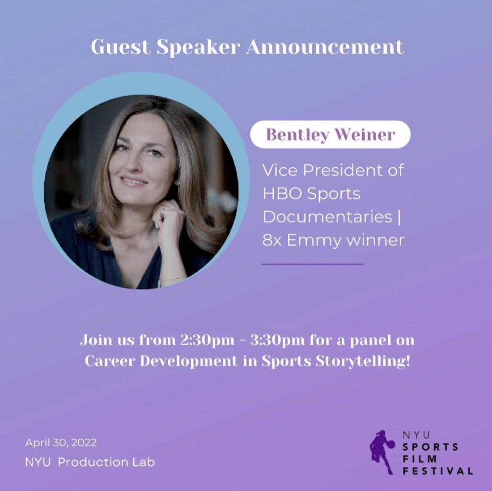
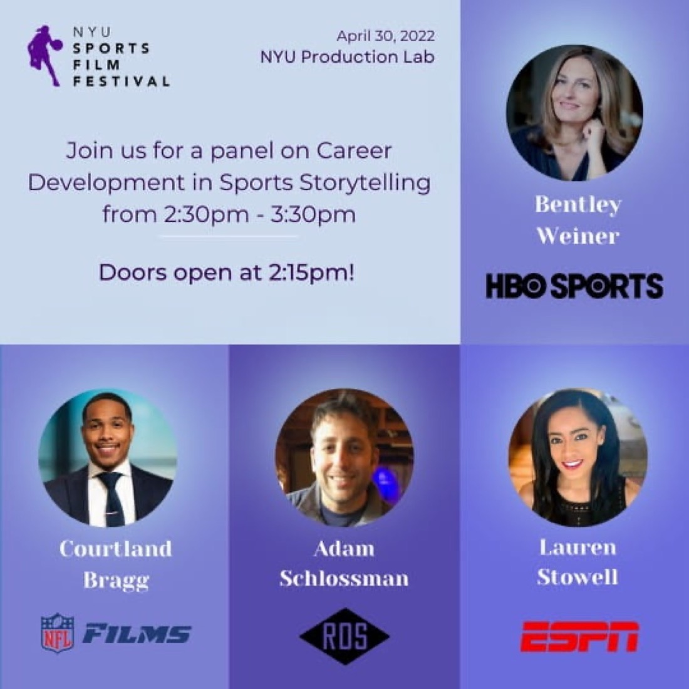
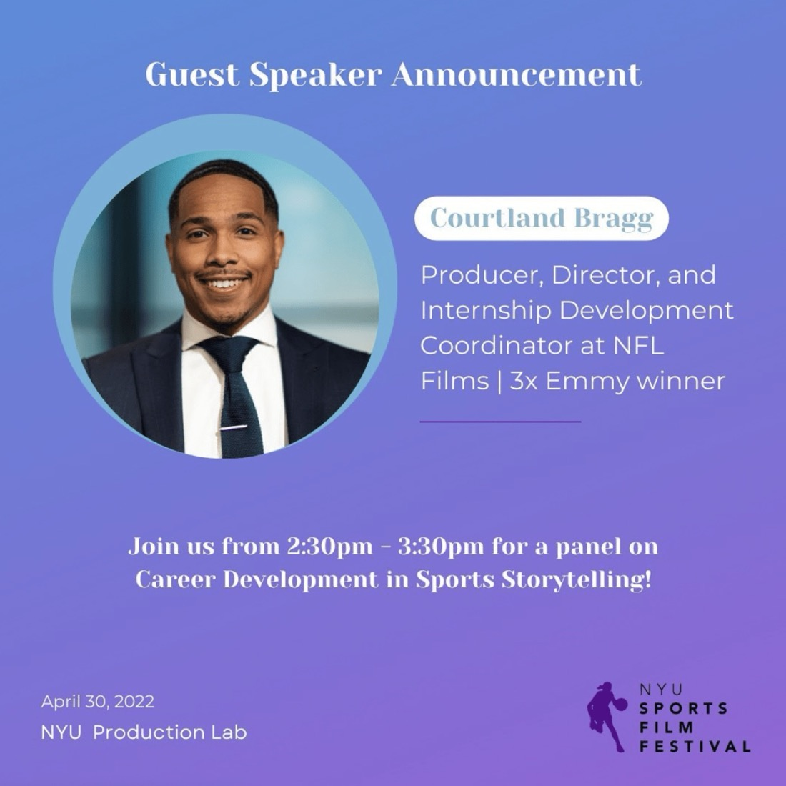
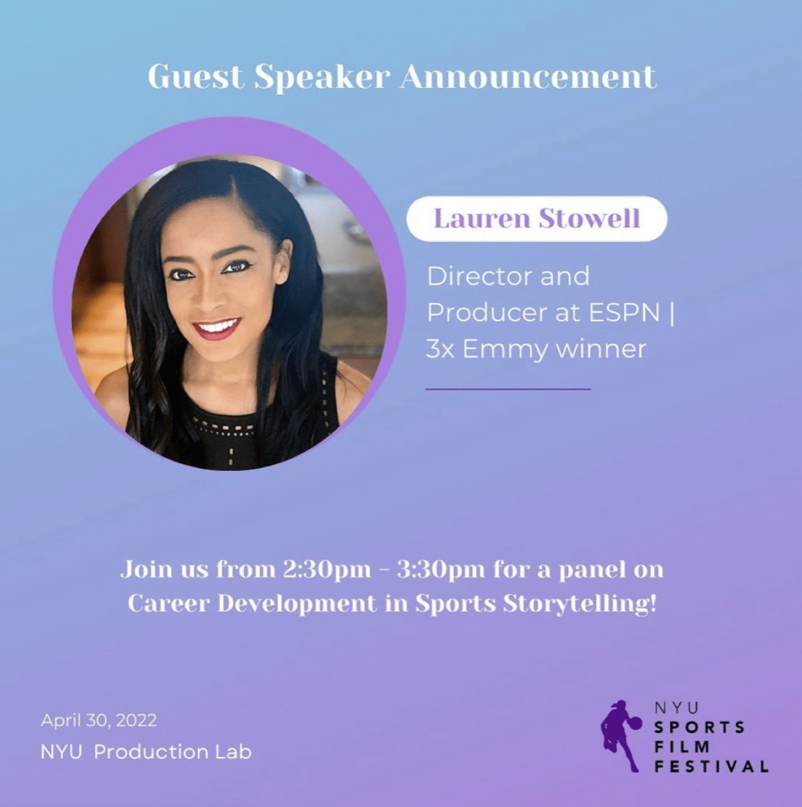
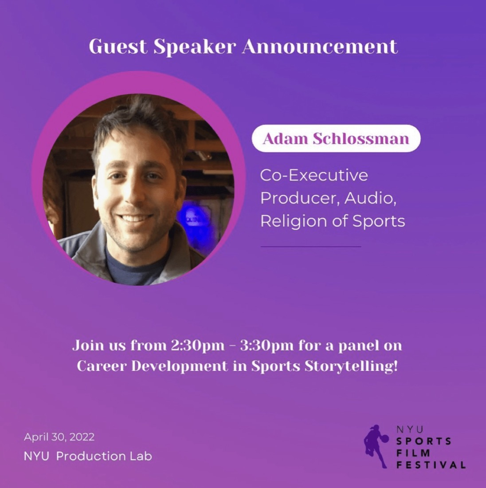
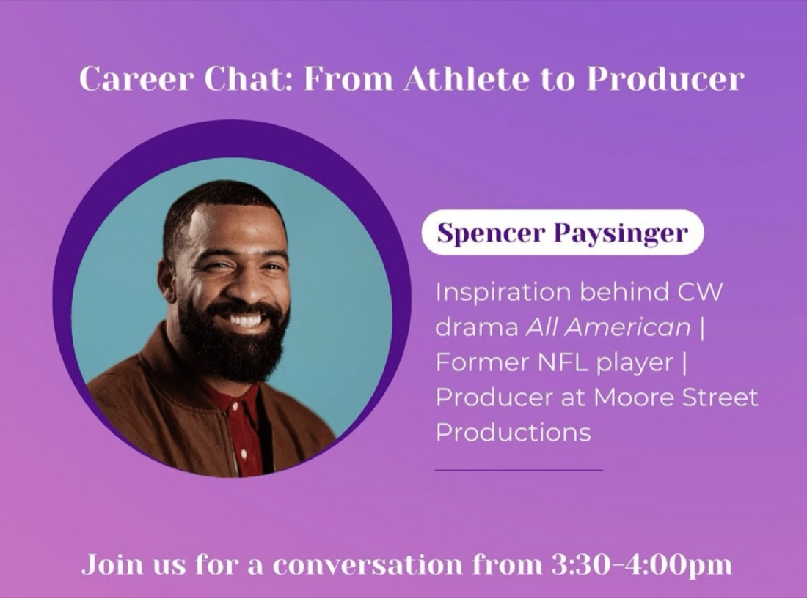
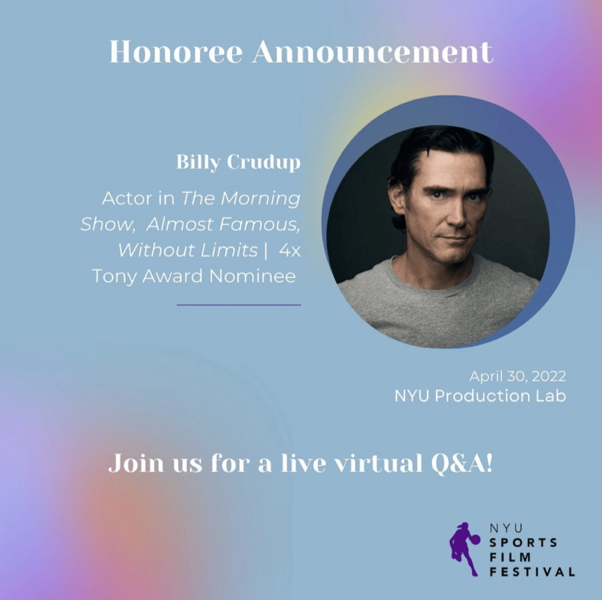
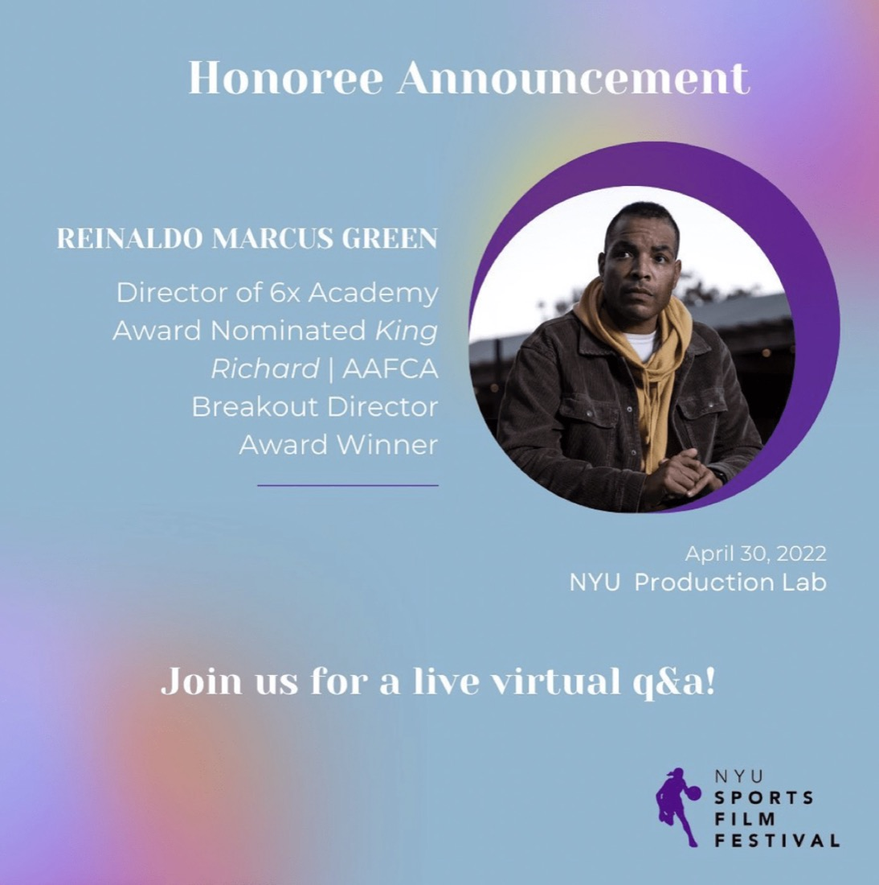

Bentley Weiner
VP, HBO Sports Documentaries
An eight-time Emmy winner who led HBO’s 24/7 series for a decade and has overseen films including Tiger and 100 Foot Wave.
April 30, 2022 · NYU Production Lab
After launching virtually in 2021, NYUSFF held its first in-person festival at the NYU Production Lab — a full day of panels, screenings, and awards, with alumni spotlights featuring Billy Crudup and Reinaldo Marcus Green.

In 2022, the festival evolved into an in-person event at the NYU Production Lab, with speakers from HBO Sports, NFL Films, ESPN, and Religion of Sports, plus acclaimed guests Billy Crudup, Reinaldo Marcus Green, and Spencer Paysinger, the inspiration for All American.
Creators of the Religion of Sports Final Four were awarded cash prizes and an additional screening at the Catalyst Content Festival, and the 2nd Annual SNY Special was broadcast multiple times, featuring award-winning films and event highlights.
Partners included SNY, Round Mound Media, Religion of Sports, Overtime, the NYU Production Lab, NYU SPS Real World, Yahoo!, OBB Media, NYU Athletics, and the National Academy of Television Arts & Sciences.


Saturday, April 30 · 2:30–3:30pm · NYU Production Lab
Speakers from HBO Sports, NFL Films, ESPN, and Religion of Sports shared how they built careers telling sports stories.

VP, HBO Sports Documentaries
An eight-time Emmy winner who led HBO’s 24/7 series for a decade and has overseen films including Tiger and 100 Foot Wave.

Producer, NFL Films
A 3x Emmy-winning producer and director, and one of the youngest members of The Athletic’s inaugural NFL 40 Under 40.

Senior Managing Producer, ESPN
A five-time Emmy winner whose work includes America’s Son and the Emmy-nominated WNBA documentary 144.

Co-Executive Producer (Audio), Religion of Sports

Saturday, April 30 · 3:30–4:00pm · Live virtual conversation
Spencer Paysinger won Super Bowl XLVI with the New York Giants and played seven NFL seasons before turning to film and television. His life story inspired The CW drama All American, which he produces through his Moore Street Productions banner.

Saturday, April 30 · NYU Alumni Spotlight Q&A
Emmy Award-winning star of Apple’s The Morning Show, whose film work includes Almost Famous, Spotlight, and Without Limits, in which he played legendary runner Steve Prefontaine.

Saturday, April 30 · NYU Alumni Spotlight Q&A
Director of King Richard, which earned six Academy Award nominations including Best Picture, and of HBO’s We Own This City. His first feature, Monsters and Men, won Outstanding First Feature at Sundance.
The 2nd Annual SNY Special was broadcast multiple times, featuring award-winning films, event highlights, and guest appearances from Billy Crudup, Reinaldo Marcus Green, and Spencer Paysinger.